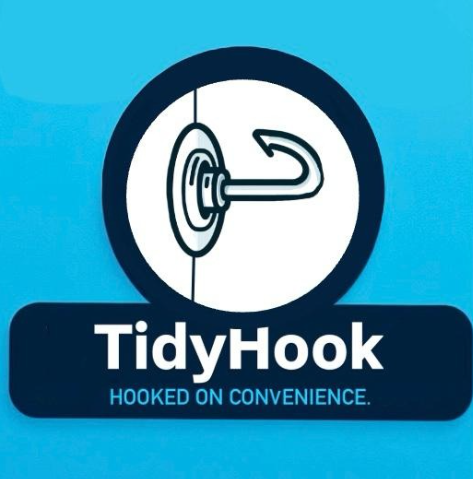

Startup Strategy • Customer Discovery • Product Positioning
Co-founded a student-led startup and helped move the idea from early concept to a more market-tested product through customer discovery, positioning, sales strategy, and digital presence development.

TidyHook taught me what it actually looks like to build from zero. The work was not just about having an idea — it was about testing demand, listening to potential customers, adjusting the positioning, and learning how to communicate the value of a product clearly.
Conducted research and interviews to better understand customer pain points, product interest, and potential buying behavior.
Helped shape how the product was explained, who it was for, and what problem it solved in a simple and compelling way.
Supported early-stage sales thinking by identifying how to communicate value, build interest, and test customer demand.
TidyHook is one of the clearest examples of how I work: I take initiative, talk to people, test ideas, adjust quickly, and keep moving. For a role involving research, content strategy, and recommendations, this experience matters because it shows I understand how to turn messy early-stage information into clearer positioning and action.